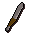

")
Terrain Survival Guide
Introduction

A few specific localities, on the other hand, can cause grief to the unprepared player, and not because they are too weak to fight against the beasts, but because the place itself abhors life. These regions must be entered with forethought, as even the most powerful adventurers can be caught out.
The Desert
The Kharidian Desert south of the Shantay Pass is a forbidding land. There is little water, and the beasts that populate its depths enjoy waiting for the weak to fall prey to the heat of the parched desert sands.
To safely enter the desert, you should take a number of items with you.
| Item | Purchased from/Found at | Purpose | ||
![[image]](../../img/main/kbase/guides/survival/waterskin.gif) Waterskin |
Shantay Pass Shop | Automatically drunk from to avoid dehydration | ||
![[image]](../../img/main/kbase/guides/survival/desert_shirt.gif) Desert Shirt |
Shantay Pass Shop | Reduces rate of dehydration | ||
![[image]](../../img/main/kbase/guides/survival/desert_robe.gif) Desert Robe |
Shantay Pass Shop | Reduces rate of dehydration | ||
![[image]](../../img/main/kbase/guides/survival/desert_boots.gif) Desert Boots |
Shantay Pass Shop | Reduces rate of dehydration | ||
|  Knife |
Shantay Pass Shop/General Store | Allows you to cut a cactus and collect water into a waterskin |
Desert robes, boots and shirts all slow the rate at which the harsh desert sun will dehydrate you, so your waterskin will need filling less often. The waterskin, when full, holds four doses of water, which you will automatically drink instead of suffering the effects of dehydration.
Taking a knife with you enables you to cut a specific cactus in order to drain water from it. This is quite simply achieved by looking around for 'Kharidian cactus (healthy)'. When you click on your knife to use it and hover over the cactus a menu will appear.
Select 'Cut' and a single dose of water will be added to any waterskin in your inventory that is not already full.
 If you've completed Dealing with Scabaras, you will be taught how to make a special water tiara that you can charge with water runes to replace the need for water skins in the desert.
If you've completed Dealing with Scabaras, you will be taught how to make a special water tiara that you can charge with water runes to replace the need for water skins in the desert.
Following all of these precautions should enable you to spend a great deal of time in the desert, with few adverse effects. Enjoy wandering the grand dunes and admiring the opportunistic wildlife!
Mort Myre Swamp
Note: You will not be able to truly protect yourself in Mort Myre Swamp until you have completed The Nature Spirit.
Mort Myre Swamp has a dark and horrible history, as does most of Morytania. The swamp, however, features the last remnants of the most depraved creatures: Ghasts. Ghasts reach out to steal a little life from anyone that wanders through their territory, while remaining impervious to the feeble attacks of warm-blooded mortals. Not only this, but there is a chance that their horrific touch will spoil food in your inventory, making them all the more dangerous...
In order to safely pass through Mort Myre Swamp you must have completed The Nature Spirit, which will enable you to make use of the following:
| Item | Purpose | |
![[image]](../../img/main/kbase/items/misc/druid_pouch.gif) Druid Pouch |
Stores ingredients to reveal ghasts | |
![[image]](../../img/main/kbase/items/symbols_sickles/sickle.gif) Blessed Silver Sickle |
Casts 'Bloom', so you can collect ingredients for Druid Pouch |
![[image: blessed silver sickle options menu]](../../img/main/kbase/guides/survival/silver_sickle_menu1.gif "blessed silver sickle options menu") To fill your pouch, you will need to find places in the swamp where mushrooms and the like might grow (rotten logs are a good bet), as these are the main ingredients that reveal ghasts and solidify them. To gather these, you will have to artificially accelerate their growth by casting 'Bloom'. Right-click on your blessed silver sickle to bring up the menu to the right.
To fill your pouch, you will need to find places in the swamp where mushrooms and the like might grow (rotten logs are a good bet), as these are the main ingredients that reveal ghasts and solidify them. To gather these, you will have to artificially accelerate their growth by casting 'Bloom'. Right-click on your blessed silver sickle to bring up the menu to the right.
Select 'Cast Bloom' and you should see a number of items appear around you. Gather these up into your inventory. Once you have at least three, you can then click on your druid pouch to fill it with all the useful ingredients in your inventory.
Congratulations! You now have a druid pouch that will use one charge each time you are attacked by an ethereal ghast, revealing it to you so that you can now fight back against it. Your food never need go rotten again!

More articles in
Miscellaneous Guides
|
|
|
Further Help
If this article does not help you, you may find the following sections of the RuneScape site helpful:
|
|